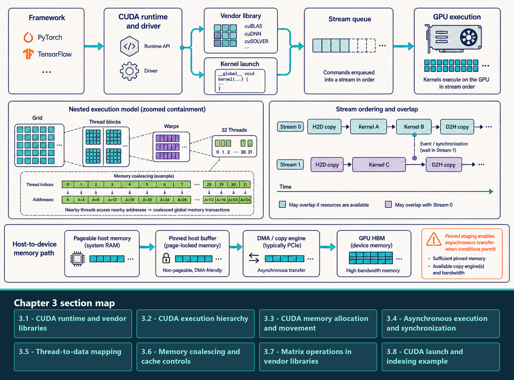

3 Software to CUDA
Compute Unified Device Architecture (CUDA) is the execution model beneath most NVIDIA GPU deep learning work. A Python program may call PyTorch, a compiler may emit Triton, and a serving engine may hide scheduling details, but the GPU still executes kernels over grids, blocks, threads, and warps.
CUDA makes hardware hierarchy programmable. The host program launches kernels on a device. A kernel launch creates a grid of blocks. Each block contains threads that can cooperate through shared memory and synchronization. Threads are scheduled in warps, which makes memory coalescing and branch divergence central performance concerns.
The CUDA memory model is equally important. Device tensors live in GPU memory. The PyTorch caching allocator reserves and reuses memory blocks. Transfers between CPU and GPU can be synchronous or asynchronous, and pinned host memory is often required for effective overlap.
A single PyTorch statement such as logits = model(input_ids) expands into many kernel launches during training. A one-token decode step can also launch many small kernels; compilation, fusion, batching, or CUDA Graph replay can reduce the exposed launch work when the execution path is compatible.
A PyTorch model call does not execute as one GPU instruction. Host code prepares tensors and dispatches operations; libraries or compilers select kernels; the CUDA runtime places copies and launches into streams; and GPU blocks and warps execute the resulting work. To locate a delay, identify where a control is interpreted, the downstream operation it changes, and the trace evidence that connects that operation to the end metric.
Use the layer map below to trace effects rather than assign an exclusive owner. Model code shapes inputs and operations; PyTorch interprets tensor and backend settings; compilers and libraries turn those choices into kernels; CUDA orders their submission; and serving or distributed runtimes coordinate work around each execution. A change at one layer can alter work observed at later layers, so record both the immediate action and the downstream result.
- Model and application layer: Defines model calls, input preparation, generation behavior, and the performance question being measured.
- PyTorch framework layer: Stores tensor metadata and provides autograd, device placement, dispatch, the caching allocator, and framework-level measurement interfaces.
- Compiler and kernel layer: Turns operations into vendor, generated, Triton, or CUDA kernels and controls the layout, tiling, fusion, and load/store behavior of hot GPU work.
- CUDA runtime and library layer: Provides device contexts, streams, events, copies, launch ordering, and access to vendor libraries such as cuBLAS or cuDNN.
- Serving and distributed layer: Schedules request admission and KV-cache use, and coordinates process groups, collective requests, and rank placement around one model execution path.
The storage and placement labels below distinguish physical location from ownership scope. HBM is GPU-attached device memory; it is close to the GPU but is not on-chip storage. The next list defines the scopes used throughout the remaining chapters.
When this chapter says where state is local, it names the boundary explicitly: on-chip for registers and shared memory, same-GPU for L2 and HBM, same-server for intra-node links, and process- or rank-local for software ownership. Quantization chapters use a separate meaning of group: the values that share one scale.
A framework call crosses the CUDA runtime and driver, then reaches a vendor library or custom kernel launch that is placed in a stream queue.

The upper path separates host dispatch from GPU execution. The middle panels show grid, block, warp, and thread containment, nearby-address access within a warp, and ordering or synchronization across streams. The lower path shows ordinary host data staged through pinned memory and transferred by a copy engine, typically over PCI Express (PCIe), into GPU HBM.
3.1 CUDA runtime and vendor libraries
The CUDA software layer provides the host-side APIs between framework code and NVIDIA GPU execution. Every kernel launch, explicit copy, stream dependency, event, and vendor-library call passes through the runtime or driver path before the hardware performs useful work.
3.1.1 Runtime and device context
The runtime submits host API requests, the driver loads and launches executable GPU code, and the device context holds process-visible execution state. Their versions and context state determine whether compiled kernels and libraries can execute on the selected GPU.
- CUDA runtime: The host API for selecting devices, allocating memory, launching kernels, creating streams and events, copying memory, and synchronizing work.
- CUDA driver: The lower-level interface that loads executable GPU code, manages device interaction, and connects the runtime to the installed driver.
- Device context: The process-visible execution state for a GPU, including loaded modules, allocations, streams, and runtime resources.
- Framework boundary: PyTorch exposes many runtime operations through
torch.cuda; the framework still defines tensor behavior and dispatch policy.
CUDA Graphs also use this submission layer, but Chapter 6 gives their full warmup, capture, replay, and graph-break sequence after ordinary launches are defined.
3.1.2 Vendor kernel libraries
Vendor libraries supply prebuilt optimized kernels behind stable APIs. The application or framework launches these operations over GPU tensors instead of editing the underlying kernel source.
- cuBLAS and cuBLASLt: NVIDIA matrix and linear-algebra libraries. Transformer projections commonly reach their tensor-core GEMM implementations when dimensions, dtype, layout, and alignment are supported.
- cuDNN: NVIDIA neural-network operator library, especially important for convolution-oriented workloads and other supported primitives.
- Vendor library kernel: A compiled GPU implementation selected through a library API. It provides the baseline that a custom CUDA or Triton kernel should beat on the measured workload.
- Communication boundary: NVIDIA Collective Communications Library (NCCL) is also a vendor library, but its collectives require processes, ranks, process groups, and physical fabrics. Chapter 12 develops that communication stack.
Vendor libraries are the default when a supported operation already has a tuned kernel. Custom code is justified only after that baseline is measured on the real shapes and data type. The next question is how CUDA divides any selected kernel into grids, blocks, warps, and threads when it executes.
3.2 CUDA execution hierarchy
CUDA execution objects appear in the order a program encounters them. The host is the CPU-side program. The device is the GPU. A kernel is launched from the host onto the device, and the launch creates a grid of blocks, threads, and warps.
The CUDA execution hierarchy should be read from the launch boundary down to the scheduling unit. Each level answers a different question: who launches work, where it runs, how work is grouped, and which threads execute together.
The hierarchy is logical, not a permanent one-to-one wiring to physical units. One kernel launch creates a grid; the grid contains blocks; an available Streaming Multiprocessor (SM) admits a block when resources permit; and warp schedulers issue active lanes from the block’s warps. A thread is one logical lane rather than a CUDA core reserved for that thread.
- Host: The CPU-side program that allocates tensors, launches kernels, schedules framework work, and may synchronize with the GPU. Python code normally runs on the host even when tensors live on the device.
- Device: The GPU selected for execution. A process may see multiple devices, but each device has its own SMs, HBM, streams, and allocator state.
- Kernel: A GPU function launched by the host. A PyTorch operation can launch one kernel, many kernels, or a fused/generated kernel depending on the backend path.
- Grid: The complete set of blocks created by one kernel launch. Grid dimensions describe how much independent block-level work is exposed.
- Block / CTA: A group of threads that can cooperate through shared memory and block-level synchronization. On NVIDIA GPUs, a block is assigned to one SM for execution; a single block does not span multiple SMs.
- Thread: The logical scalar worker that has registers and computes one or more data elements according to the kernel’s index mapping.
- Warp: The hardware scheduling group inside a block, usually 32 threads on NVIDIA GPUs. Warps explain why adjacent lane access, branch divergence, and coalescing matter.
These objects describe where CUDA work is placed. The next terms describe how efficiently resident warps use execution lanes and hide long-latency operations.
- Warp divergence: A warp diverges when lanes in the same warp must follow different control-flow paths. The hardware serializes the paths under masks, so useful lane utilization drops even though the kernel is logically correct.
- Predication: A compiler or hardware technique that can execute short conditional work under lane masks instead of taking a full branch. It can reduce branch overhead, but both paths may still consume instructions.
- Occupancy: The ratio of active resident warps on an SM to the maximum possible resident warps. It is useful because other warps can run while one warp waits on memory, but high occupancy is not the same as high throughput.
- Latency hiding: The SM scheduler keeps execution units busy by switching to ready warps when one warp stalls on HBM, dependencies, or synchronization. If too few warps are resident, long HBM latency becomes visible as idle cycles.
Warp scheduling is the SM-level answer to HBM latency. A global-memory load can take far longer than an arithmetic instruction, so the SM relies on many resident warps to cover the wait. Register pressure, shared-memory use, large blocks, and launch shape can reduce resident warps. The optimization target is enough ready work to hide stalls while keeping memory accesses coalesced and instruction dependencies short.
Distinguishing execution limits
Divergence reduces useful lanes inside a warp. Low occupancy leaves too little ready work to cover latency. Poor coalescing expands the memory transactions needed for a warp’s data. A trace can show more than one limit, and each points to a different fix.
Divergence, low occupancy, and poor coalescing waste different resources, so a profiler must identify which limit is active before the launch is changed. This execution model assumes that tensors are available to the device; the next question is how memory is allocated and how bytes reach the kernel.
3.3 CUDA memory allocation and movement
Allocation and movement are part of the performance model, not background bookkeeping. A program can be mathematically correct and still slow or unstable because it allocates unpredictably, fragments memory, or synchronizes copies.
3.3.1 Host-device and peer-transfer ownership
Explicit transfers are initiated by framework placement calls or CUDA runtime APIs and executed over the path available between the source and destination. The list identifies the objects and hardware conditions that govern those transfers.
- Pinned host memory: Page-locked CPU memory that allows more efficient host-to-device and device-to-host transfer. It is commonly used by DataLoaders and async copies, but pinning too much host memory can hurt the operating system.
- Asynchronous copy and streams: A copy can overlap with compute only when the copy is issued asynchronously, the host memory path supports it, and stream dependencies do not serialize the work. A later synchronization can still expose the full cost.
- cudaMemcpy: The CUDA runtime copy operation used to move bytes between host and device or between devices. In PyTorch this is usually hidden behind
.to(device),.cuda(),.cpu(), or tensor copy calls. - Direct Memory Access (DMA): A hardware transfer path that can move data without the CPU copying each byte. Pinned host memory helps DMA-based GPU transfers, but the transfer still consumes interconnect bandwidth.
- PCIe transfer: Host-device or some device-device traffic over the PCIe bus; its bandwidth is far below HBM, so repeated round trips should be avoided.
- Peer transfer: A GPU-to-GPU copy that can avoid host staging when peer access, topology, and the runtime configuration permit a direct path.
- Mapped host memory: Lets a GPU kernel access a host allocation through the system interconnect, which can be useful for small or irregular control data and slow for bulk tensor traffic.
- Managed memory: Can migrate or prefetch pages between processors;
cudaMemAdviseandcudaMemPrefetchAsyncguide residency, while ordinary L1 and L2 cache behavior remains hardware-managed.
A low-level CUDA lifecycle makes the hidden costs visible: allocate device memory, copy inputs from host to device, launch the kernel, synchronize only when required, copy results back if the host needs them, and free or reuse device memory. PyTorch hides most of these calls, but the performance costs remain.
Example: Host-device copy lifecycle. Illustrative CUDA C++ lifecycle; requires nvcc and a CUDA-capable GPU. The listing emphasizes allocation, stream ordering, copies, launch, synchronization, and cleanup. It omits input initialization, result checking, and CUDA error handling, so do not use it as a complete runnable test. A runnable version should initialize h_x and h_y, check every CUDA call and the launch, verify selected h_out values after synchronization, and report the build command and expected result.
Code example: Host-device copy lifecycle
#include <cuda_runtime.h>
__global__ void add(const float* x, const float* y, float* out, int n) {
int i = blockIdx.x * blockDim.x + threadIdx.x;
if (i < n) out[i] = x[i] + y[i];
}
int main() {
const int n = 1 << 20;
const size_t bytes = n * sizeof(float);
float *h_x, *h_y, *h_out, *d_x, *d_y, *d_out;
cudaStream_t stream;
cudaMallocHost(&h_x, bytes); // page-locked host buffers
cudaMallocHost(&h_y, bytes);
cudaMallocHost(&h_out, bytes);
cudaMalloc(reinterpret_cast<void**>(&d_x), bytes);
cudaMalloc(reinterpret_cast<void**>(&d_y), bytes);
cudaMalloc(reinterpret_cast<void**>(&d_out), bytes);
cudaStreamCreate(&stream);
cudaMemcpyAsync(d_x, h_x, bytes, cudaMemcpyHostToDevice, stream);
cudaMemcpyAsync(d_y, h_y, bytes, cudaMemcpyHostToDevice, stream);
add<<<(n + 255) / 256, 256, 0, stream>>>(d_x, d_y, d_out, n);
cudaMemcpyAsync(h_out, d_out, bytes, cudaMemcpyDeviceToHost, stream);
cudaStreamSynchronize(stream);
cudaStreamDestroy(stream);
cudaFree(d_x); cudaFree(d_y); cudaFree(d_out);
cudaFreeHost(h_x); cudaFreeHost(h_y); cudaFreeHost(h_out);
}A host-to-device transfer begins when the CPU submits a copy. If the source is pageable, the runtime may first copy it into a page-locked staging buffer; a pinned source can avoid that staging step and support asynchronous DMA. non_blocking=True asks PyTorch to submit without making the host wait, but it does not make the consumer independent: a kernel that needs the batch waits when correct stream ordering or an explicit dependency requires it. Transfer time is hidden only when independent work can run at the same time on hardware that supports the overlap. Confirm that overlap on a timeline. Calls such as .item(), .cpu(), or printing a CUDA-produced value wait for the work needed to produce the requested value; a stream or device synchronization has the broader wait scope defined by that synchronization operation.
Example: Pinned host batch transfer. This abbreviated training-input path assumes that dataset, model, and loss_fn already exist. It demonstrates pinned staging and a non-blocking transfer request, but it does not prove overlap unless a timeline shows copy and compute running concurrently.
Code example: Pinned host batch transfer
from torch.utils.data import DataLoader
loader = DataLoader(dataset, batch_size=32, pin_memory=True)
for batch in loader:
input_ids = batch["input_ids"].to("cuda", non_blocking=True)
labels = batch["labels"].to("cuda", non_blocking=True)
logits = model(input_ids)
loss = loss_fn(logits, labels)
loss.backward()An asynchronous copy hides transfer time only when pinned memory, stream order, hardware, and independent compute permit real overlap; non_blocking=True alone is not evidence. Once the bytes arrive, the next question is how allocator reuse, fragmentation, and runtime controls affect the device memory available to later kernels.
3.3.2 Allocator and runtime memory controls
Allocation state determines whether the next tensor or workspace can be placed without an expensive driver request or an out-of-memory failure. Runtime controls can influence reuse and cache policy, while hardware still decides exact replacement and residency.
- Device tensor: A tensor whose storage is allocated in GPU memory and whose operations normally execute on that GPU. The Python object is host-side metadata; the tensor data pointer refers to device memory.
- Caching allocator: PyTorch’s CUDA allocator reserves blocks from the CUDA driver and reuses them for later tensor allocations, reducing repeated driver allocation calls.
- Allocated versus reserved: Allocated memory belongs to live tensors. Reserved memory remains in allocator-managed blocks for reuse, so reserved capacity can exceed the currently live tensor footprint.
- Fragmentation: Free capacity divided into blocks that cannot satisfy the next allocation shape. Dynamic sequence lengths, workspaces, and long-running serving admission can make it visible.
- L2 persisting access window: A CUDA stream or graph setting that marks a global-memory range for preferred L2 retention within hardware and set-aside limits.
The following controls influence resource preference or retention. They guide supported hardware behavior; ordinary application code still cannot assign a tensor to a chosen cache set or permanently lock arbitrary cache lines.
| Runtime control | Owner | Useful influence | Boundary |
|---|---|---|---|
| Shared-memory/L1 preference | CUDA runtime or kernel attribute | Can prefer a supported L1/shared-memory split | Does not guarantee exact capacity or residency |
| L2 persisting window | CUDA stream or graph kernel-node attribute | Can prefer retention for a global-memory range | Cannot exceed set-aside capacity or pin arbitrary lines |
| Allocator configuration | PyTorch CUDA allocator | Can change block splitting, reuse, and reclamation behavior | Cannot reduce the workload’s true live tensor footprint |
Allocator settings can change block reuse and fragmentation, while cache controls can influence retention, but neither reduces the workload’s true live memory or guarantees residency. The next question is how streams and events order allocations, copies, and kernels without adding unnecessary waits.
3.4 Asynchronous execution and synchronization
A stream orders the operations submitted to it: a kernel begins only after earlier copies and kernels in that same stream. Different streams do not automatically establish an order merely because one operation reads data written by another. The application must provide the dependency, for example by recording an event after the producer and making the consumer stream wait on that event; without that ordering, the consumer can race the producer. Correctly ordered operations in different streams are eligible to overlap when they are independent and the device has the required copy or compute resources. For GPU elapsed time, record start and end events in the measured stream and synchronize the end event before reading the duration. Use a device- or stream-wide synchronization only when its full wait scope is required, because a broader wait can remove useful overlap and make a host timer include work outside the intended region.
3.5 Thread-to-data mapping
Section 3.2 defined the grid, block, and thread. To map that hierarchy onto a one-dimensional tensor, thread t in block b starts at i = b * blockDim.x + t. If the grid contains fewer threads than elements, the thread advances by blockDim.x * gridDim.x and processes i + stride, i + 2 * stride, and so on. Adjacent threads then access adjacent elements when the array is contiguous, which gives the memory system an opportunity to coalesce their requests. If lanes diverge into different branches or scattered addresses, the same mathematical operation may require many more memory transactions.
The mapping also controls work balance. If some threads process much more data than others, the warp or block waits for the slowest lane. If the launch exposes too little parallel work, SMs remain idle even when the kernel code is correct.
3.6 Memory coalescing and cache controls
Memory coalescing is the GPU memory-access behavior where adjacent lanes in a warp request adjacent or nearly adjacent memory addresses, allowing the hardware to serve the warp with fewer memory transactions. Coalescing determines how much HBM bandwidth is spent on useful data rather than wasted transactions.
GPU memory is served in cache-line and sector-sized transactions rather than one independently sized transfer per scalar address. When neighboring lanes request nearby addresses, one transaction can supply many useful values. When lanes request scattered addresses, the hardware fetches the sectors or cache lines containing those addresses; if each lane uses only one value from a different line, most fetched bytes are unused. The operation then spends bandwidth on transactions that carry little useful data.
In a coalesced pattern, lane 0, lane 1, and their neighbors read nearby addresses, so a small number of transactions supplies many requested values. In a scattered pattern, lanes may pull separate sectors or cache lines for only one useful value each, forcing more transactions and lowering useful bytes per transaction. Exact transaction sizes depend on architecture, element width, alignment, and which lanes are active.
Shared memory has a different access problem. It is divided into banks so lanes in a warp can read or write multiple addresses in parallel. A bank conflict occurs when multiple lanes request different addresses that map to the same bank in the same instruction; the access is split into multiple transactions. Broadcast-like same-address cases are handled specially, so shared-memory layout and padding should spread lanes across banks when they need different words.
Kernel code and compiler backends can also express cache-use intent. These controls are useful only after measurement shows that reuse, sector traffic, or shared-memory capacity is part of the bottleneck.
| Kernel control | Where it is expressed | What it influences | What to verify |
|---|---|---|---|
| PTX cache operators | Generated PTX or custom kernel code | Load/store intent such as cache-all, L2-only, or streaming behavior | Sector traffic, hit behavior, and portability across architectures |
| PTX eviction and prefetch hints | Generated PTX, compiler, or custom code | Replacement or prefetch preference where supported | Measured reuse and working-set size |
| Shared-memory tiling | CUDA C++, Triton, or compiler-generated kernel | Programmer-controlled staging and reuse near the SM | Bank conflicts, synchronization, occupancy, and actual reuse |
3.7 Matrix operations in vendor libraries
Matrix operations show how framework calls, vendor libraries, and custom kernels meet. PyTorch commonly dispatches supported matrix multiplication to cuBLAS or cuBLASLt; custom CUDA or Triton code is justified when the measured dimensions, layout, fusion boundary, or epilogue are poorly served by that baseline.
General Matrix-Matrix Multiplication (GEMM) multiplies two matrices. In mathematical notation, the operation is:
\[ C = A B \tag{3.1}\]
Here A has shape M by K, B has shape K by N, and C has shape M by N. A transformer projection over many tokens often becomes a GEMM because many token vectors are multiplied by the same weight matrix. For example, a 2048-token batch multiplied by a 4096 by 4096 projection exposes substantial reuse of the weights. The notation omits layout, precision, tiling, and whether tensor cores are actually used.
General Matrix-Vector Multiplication (GEMV) multiplies a matrix by a vector:
\[ y = A x \tag{3.2}\]
Here A has shape M by N, x has length N, and y has length M. Small-batch decode can resemble GEMV because one or a few token vectors read a large matrix with much less reuse than GEMM. For example, multiplying a 4096 by 4096 matrix by one vector reads many weights to produce one output vector. The notation omits batching, fused epilogues, cache effects, and the fact that production kernels often reshape the operation to recover reuse.
The difference is reuse. In a training or prefill projection, many token vectors can reuse a weight tile, so the operation is usually GEMM-like and may reach high Tensor Core utilization. In small-batch decode, one or a few vectors use the same large weight matrix, so bytes read per arithmetic operation increase and the projection becomes GEMV-like. GEMV-like is a performance description, not a guarantee about the production kernel: batching, fusion, grouped-query attention, tensor parallelism, and custom layouts can change the executed shape. Table 3.3 summarizes the comparison.
| Operation | Mathematical form | Typical LLM setting | Performance character |
|---|---|---|---|
| GEMM | C = AB | Training and prefill projections over many tokens | High arithmetic intensity and good tensor-core utilization |
| GEMV | y = Ax | Small-batch single-token decode | Lower arithmetic intensity and often bandwidth-sensitive |
The GEMV timing table compares execution time in milliseconds across PyTorch/cuBLAS and five custom CUDA iterations. It reports one measured implementation sequence, not a generic ranking of every possible GEMV kernel.
General Matrix-Vector Multiplication (GEMV) is often bandwidth-sensitive because one vector is reused against many rows with less data reuse than a large matrix-matrix multiply.

The timings are one experiment, not a portable ranking. They are meaningful only with the original matrix shape, dtype, GPU, software versions, warmup, timing boundary, and correctness tolerance; the reusable lesson is that mapping and reduction choices must be measured against the vendor-library baseline.
Chart note
Measured or compared: Execution time for six matrix-vector implementations: PyTorch native cuBLAS and CUDA iterations 1 through 5.
Axes, units, and series: No x/y axes are drawn because the source visual is a table. Rows are implementation methods; the single numeric series is execution time in milliseconds.
Read for: The important trend is non-monotonic optimization: a naive custom kernel is much slower than the library path, a shared-memory version can regress, and warp-per-row scheduling recovers library-level timing.
Source status: Exact source table screenshot; values are read from the slide and are not recomputed or redrawn by the generator.
The five implementations change how threads read a row and combine partial sums. Compare each one with the vendor-library baseline for the same matrix shape, dtype, GPU, warmup, timing boundary, and correctness tolerance.
- Iteration 1 (Naive): Each thread is assigned to compute one output element of y, looping over all columns of the weight matrix A. This is simple but leads to uncoalesced global memory reads because adjacent threads read non-adjacent rows in memory.
- Iteration 2 - mapping change, exact operation needs source verification: the current text says that layout or thread indexing changed, but it does not identify the source matrix layout, strides, or lane-to-address mapping. State those details from the source experiment before explaining why traffic changed. A transpose view alone changes metadata, not stored byte order. Until the mapping is confirmed, do not label the iteration as a coalescing improvement.
- Iteration 3 (Shared Memory Block Reduce): The kernel divides the column dimension across threads in a block, cooperatively summing chunks into shared memory before executing block-level synchronization (__syncthreads()). This iteration frequently regresses or fails to improve speed due to shared memory bank conflicts, synchronization barriers, and thread address arithmetic overhead.
- Iteration 4 (Cooperating Threads): A row is divided across many threads and reduced at block scope. The useful thread count depends on row width, dtype, occupancy, and synchronization cost.
- Iteration 5 (Warp per Row / Warp-Shuffle): One warp can cooperate on a row and reduce partial sums with register shuffles, avoiding block-wide barriers for that reduction. Whether it approaches cuBLAS depends on the measured shape, dtype, GPU, and timing method.
The Iteration 3 regression is a good example of why ‘use shared memory’ is not an optimization by itself. Shared memory helps when it creates reuse or predictable cooperation. It can hurt when the data is used only once, when every reduction step needs a barrier, when bank conflicts serialize warp accesses, or when extra address arithmetic and shared-memory allocation reduce occupancy. Iteration 5 improves the same mathematical reduction by keeping partial sums in registers and using warp-shuffle operations inside one warp, avoiding block-wide barriers and shared-memory traffic.
Launch overhead often becomes visible in small-batch decode because each kernel does little work. A CUDA launch has a nonzero host-side cost whose size depends on the software stack, hardware, synchronization, and measurement method. For sufficiently small operations, that fixed cost can exceed device execution time. The knee on a size-versus-latency plot is the measured transition for one operation and environment; below it, launch cost dominates, while larger inputs eventually expose memory or compute limits.
3.8 CUDA launch and indexing example
This CUDA-like pseudocode connects one-dimensional tensor indexing to a launch configuration. It shows block and thread indices, a grid-stride loop, and the access pattern needed for coalescing; allocation, data transfer, synchronization, and cleanup are outside this example.
Example: Grid-stride vector add.
Code example: Grid-stride vector add
kernel vector_add(x, y, out, n):
tid = blockIdx.x * blockDim.x + threadIdx.x
stride = blockDim.x * gridDim.x
for i in range(tid, n, stride):
out[i] = x[i] + y[i]
launch grid = ceil(n / block_size), block = block_sizeThe complete launch makes the cost visible: thread mapping, address order, memory transfer, and synchronization all shape the result. Triton keeps these concerns but expresses them through program instances, tiles, offsets, masks, and compiler-selected lower-level execution.